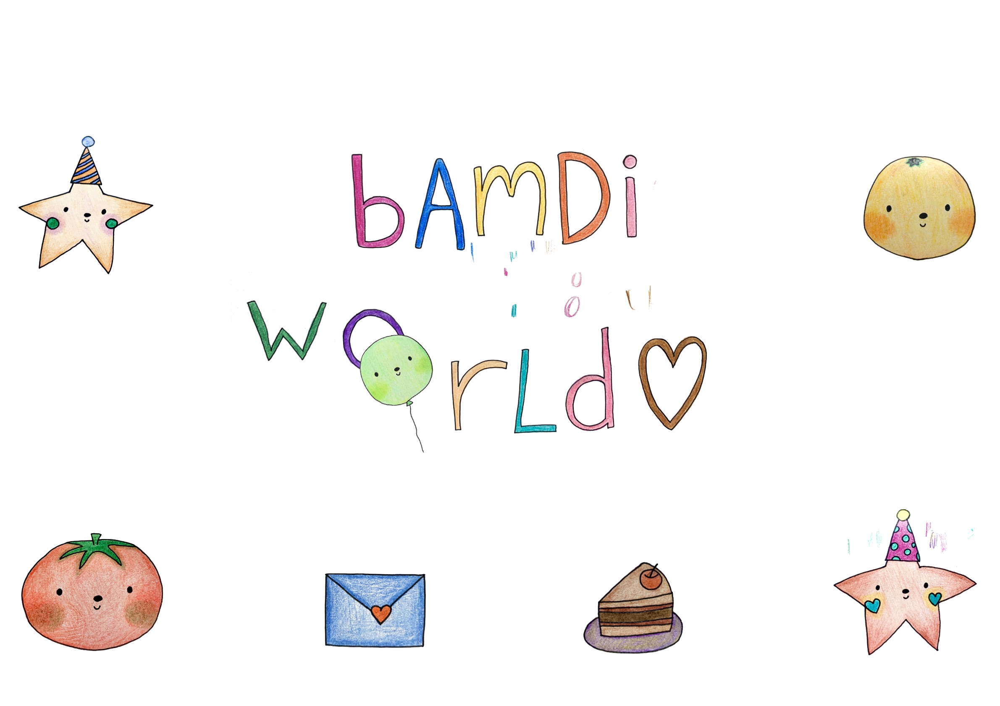

About
Hi and welcome!
Lived in Seoul, Shanghai, Dallas, Daejeon
Currently in Seoul
- Seoul National University – BA Psychology
- KAIST – MS Culture Technology
- 서울대학교 – 심리학 문학사
- 한국과학기술원(KAIST) – 문화기술대학원 공학석사
Favorites
A few of my favorite things lately.
- Sharpening a new set of colored pencils
- Tangerines on a winter afternoon
- Long walks with a good playlist
요즘 좋아하는 것들이에요.
- 새 색연필 깎기
- 겨울 오후에 먹는 귤
- 좋아하는 음악 들으며 오래 걷기
Projects
Projects I've worked on will be gathered here, one by one.
- Star FriendsTwo stars in party hats
- Fruit ShopA rosy-cheeked tangerine and tomato
- Sweet LetterA heart-sealed letter and a slice of cake
그동안 해온 프로젝트들을 하나씩 모아둘 예정이에요.
- 별 친구들고깔모자를 쓴 별 두 개
- 과일 가게볼이 발그레한 귤과 토마토
- 달콤한 편지하트 편지와 케이크 한 조각
Inspiration
Inspiring people, works, and concepts.
영감을 주는 사람, 작업, 그리고 개념들.
Contact
If you'd like to say hello, feel free to send me a letter.
하고 싶은 이야기가 있다면 편하게 편지 보내주세요.